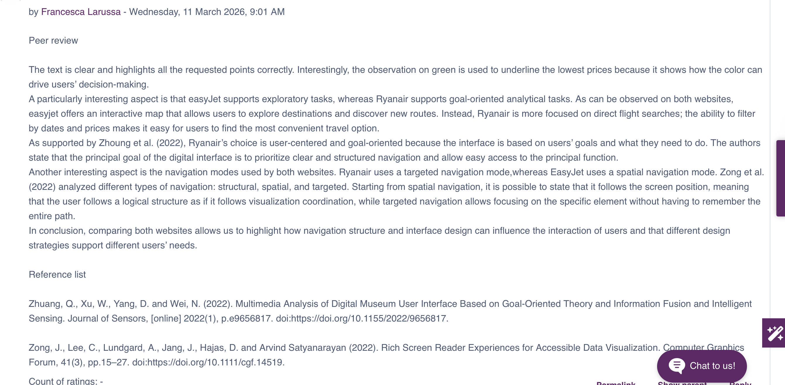
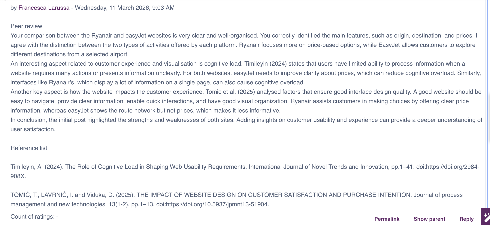

Visualising Data
This section collects some formative activities completed during the module
Unit 1 - Data Visualisation for Machine Learning
In Unit 1 I had the opportunity to explore the value of data visualisation, focusing on different tools used to present data.
I also worked on an interesting case study.
My notes for that exercise can be downloaded below:
Download my exercise
Unit 2 - Grammar and Idioms of Data Visualisation
In Unit 2, I explored the basic principles of data visualisation, with a focus on data abstraction, task abstraction and idioms. The most interesting aspect was understanding how to represent data based on specific needs
During this unit, I also wrote a post for a collaborative discussion on Ryanair and EasyJet.
Collaborative Discussion - Initial Post
As mentioned above, during this Unit, I took part in a collaborative discussion. The document below is my Initial post:
Download my Initial PostUnit 3 - Introduction to R for Data Visualisation
Unit 3 focused on the R programming language. Through the readings, I began practising data visualisation. I attempted to recreate the plots presented in the first chapter and reviewed some code related to the coursework.
In this unit, I also wrote two peer reviews, as shown below.
Collaborative Discussion - Peer Reviews
As mentioned above, during this Unit, I took part in a collaborative discussion. The screenshot below represents two peer review posts:


Seminar activity
Here you can download my Seminar Activity
Download my exerciseUnit 4 - Reading, Organising and Writing Data with R
In Unit 4, I learned that programming is not only about knowing everything, but also about being able to find solutions when problems arise.
In addition, I started learning data visualisation using both Python and R.
Unit 5- Data Transformation and Exploratory Data Analysis (EDA)
During this unit, the focus was on R programming language, particularly on manipulating rows, columns and groups
I also learned how to tidy datasets, understanding that there is no single correct way to do so, as it depends on the type of analysis, the desired visualisations and what makes the process more efficient.
During this unit, I also completed a seminar exercise and a formative activity, which can be download below.
Seminar Activity
Download exerciseFormative activity
Download exerciseUnit 6 - Visualising Classification Models
In Unit 6, I explored different classification methods such as logistic regression, linear regression, and decision trees.
I also learned how to evaluate their performance.
The formative activity focused on building ROC curves to assess classification performance, analysing the trade-off between true positive rate and false positive rate.
I understood how the choice of threshold affects model sensitivity and specificity
In addition, for the seminar, I reproduced lab exercises to further explore the main classification models.
Logistic regression estimates the probability of belonging to a class, while decision tree split data using decision rules such as "if-then"
Unit 7 - Visualising Dimensionality Reduction and Clustering Models
In Unit 7, the focus was on Principal Component Analysis (PCA) and clustering models, as well as data visualisation for unsupervised learning.
This unit helped me understand how to identify patterns and structures in data without predefined labels.
During this unit, I also completed a seminar lab. The notes can be downloaded here:
Seminar note
Download ExerciseUnit 8 - Data Visualisation with Python
This unit focused on data visualisation with Python, exploring different programming tools for creating graph and supporting data-driven decision-making
The formative activities involved analysing the strenghts and limitations of sunburst plots, which can be downloaded below.
Formative Activity
Download Formative ActivityUnit 9 - Designing a Dashboard
Unit 9 explored how to design dashboards, focusing on best practices for creating effective layouts, including the use of colour and structure.
The formative activity involved completing at least two tasks from a bloos pressure Jupyter Notebook file, which can be downloaded here.
Formative Activity
-
Here you can download the notes
Download notes -
Here you can download the python file
Download Python code
Unit 10 - Introduction to Tableau
Unit 10 introduced Tableau. I followed several tutorials for the formative activity and took notes, which can be download here.
Tableau's notes
Download notesUnit 11 - Designing a Dashboard
Unit 11 also focused on Tableau. During this unit, I started developing my dashboard, building on previous notes and additional tutorials to improve my skills
Unit 12 - Best Practice in Data Visualisation
In Unit 12, the focus was on data visualisation best practices and how to apply them effectively.
The formative activity involved reading three articles and writing a short reflection paper, which can be downloaded below.